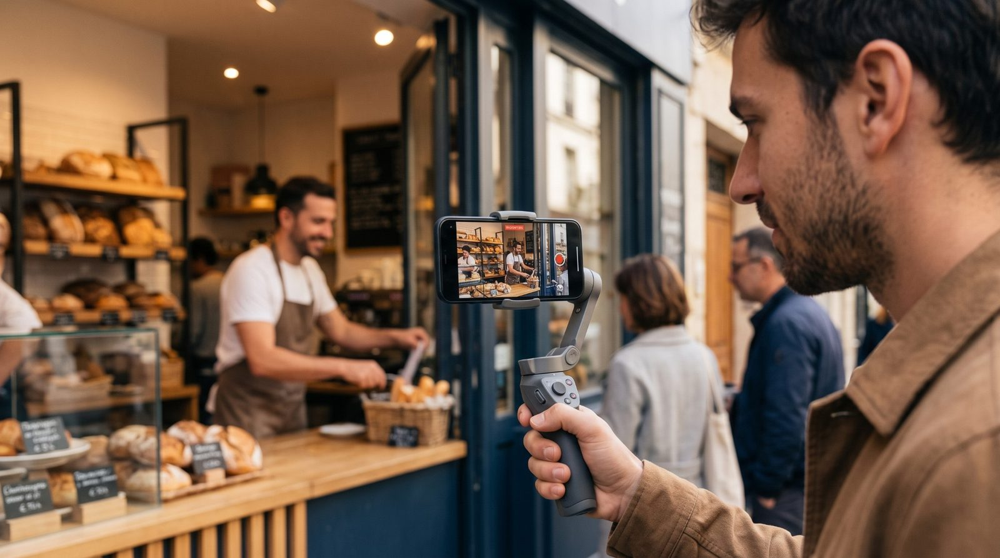
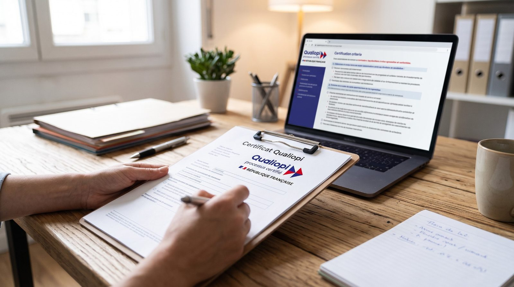

Visibilité locale par la vidéo
Filmer, monter et diffuser pour attirer des clients locaux
14 h à 60 h · présentiel
Voir la formation
dès 1 190 € HTfinançable
On se déplace dans votre commerce pour vous former sur votre vrai cas. Vous repartez autonome, avec vos propres outils — pas dépendant d'une agence.
Découvrir notre méthode
Vos formations se déroulent directement dans votre commerce ou sur site. Le formateur se déplace dans tout le département de l'Hérault (34), avec le même niveau d'exigence et de suivi.
Des parcours courts et concrets, construits sur votre activité réelle. Toutes nos formations sont certifiées Qualiopi et peuvent être prises en charge selon votre situation.
Concevoir, mettre en ligne et piloter un site qui vous amène vraiment des clients — construit sur votre activité pendant la formation. Vous repartez avec votre site en ligne et la capacité de le faire vivre seul.
À l'issue de la formation, l'apprenant est capable de concevoir, mettre en ligne et piloter un site professionnel adapté à son activité.
Cette formation peut être prise en charge selon votre statut : FAFCEA (artisans), AGEFICE (commerce/services), OPCO (salariés).
De la création du site à la première vente : vous construisez votre boutique sur votre propre catalogue et apprenez à lire vos indicateurs de vente.
À l'issue, l'apprenant sait créer, structurer et piloter sa boutique en ligne, et lire ses indicateurs de vente.
Prise en charge possible selon votre statut : AGEFICE, FAFCEA, OPCO.
Concevoir et piloter un système de prospection (page de conversion, message, prise de rendez-vous, suivi) en l'appliquant à votre propre activité.
À l'issue, l'apprenant sait concevoir et piloter un système de prospection B2B conforme, appliqué à sa propre activité.
Prise en charge possible selon votre statut : AGEFICE, OPCO.
Concevoir, tourner, monter et diffuser soi-même des vidéos courtes pour générer de la visibilité locale et des contacts. On vient filmer dans votre commerce, vous repartez autonome.
| Compétence | Objectif opérationnel évaluable |
|---|---|
| C1 — Analyser son positionnement local | Produire un diagnostic de sa visibilité et un plan de contenu sur 90 j |
| C2 — Tourner des vidéos courtes au smartphone | Réaliser seul un plan exploitable (cadrage, lumière, accroche) |
| C3 — Monter un format court | Monter une vidéo verticale sous-titrée et rythmée |
| C4 — Diffuser et planifier | Publier et programmer sur les réseaux + optimiser sa fiche Google Business |
| C5 — Lire les indicateurs et ajuster | Interpréter portée/engagement et décider de la suite |
Cette formation suit les 4 conditions de l'AFEST (action de formation en situation de travail, D.6313-3-2) : vous apprenez sur votre activité réelle, avec des preuves à chaque étape.
| Condition légale | Mise en œuvre |
|---|---|
| 1. Analyse de l'activité de travail | Audit initial de votre positionnement local réel |
| 2. Formateur-tuteur désigné | Caméraman-formateur désigné, qualification prouvée |
| 3. Mises en situation + phases réflexives distinctes | Tournage réel sur votre lieu de travail + débrief structuré |
| 4. Évaluations spécifiques | Positionnement + évaluations intermédiaires + finale |
Prise en charge possible selon votre statut : AGEFICE (commerce/restauration), FAFCEA (artisans du bâtiment), OPCO (salariés).
Pas de diapos pendant deux jours. Vous apprenez sur votre activité réelle, avec un formateur à vos côtés — une pédagogie AFEST, traçée pour Qualiopi.
On analyse votre situation, vos objectifs et votre marché local pour cadrer le parcours.
Vous faites, on accompagne. Tournage chez vous, création de vos outils, sur vos vrais cas.
On prend du recul ensemble : ce qui marche, ce qu'il faut ajuster. Vous comprenez le pourquoi.
Vous repartez avec vos livrables et vos compétences. Évaluation des acquis à 90 jours.
Les fonds de formation ne financent que de la formation réelle. Chez VFormations, vous n'achetez pas une prestation « clé en main » : vous apprenez à faire, sur votre propre cas, et vous repartez capable de continuer seul. C'est plus exigeant — et c'est ce qui rend la formation finançable et utile dans la durée.
Réservez un diagnostic de 30 minutes. On regarde votre situation et on vous dit concrètement ce qui est possible.
Réserver un diagnosticEn tant que dirigeant, vous cotisez déjà à un fonds de formation. Cet argent peut financer une partie de votre parcours — on monte le dossier avec vous.
| Financeur | Pour qui | Repère 2026 [à vérifier] |
|---|---|---|
| AGEFICE | Dirigeants commerce, services, restauration | 42 €/h · jusqu'à 3 000 €/an (5 000 € si RNCP) |
| FAFCEA | Artisans | 35 €/h · 600 €/an si CFP ≤ 85 € (dès 1/9/2026) |
| OPCO | Salariés (plan de développement des compétences) | Selon branche et effectif |
| Constructys | BTP 11-49 salariés | 19 €/h (dès 1/6/2026) |
30 minutes pour estimer votre prise en charge et votre reste à charge, sans engagement.
Réserver un diagnostic30 minutes, sans engagement. On analyse votre visibilité actuelle, votre éligibilité au financement et le reste à charge — puis on vous dit concrètement ce qui est possible.
* Champs obligatoires · Vos données servent uniquement à traiter votre demande et ne sont ni revendues ni transmises à des tiers.
VFormations accompagne les professionnels de l'Hérault à devenir autonomes sur leur communication et leur acquisition de clients — par la pratique, sur leur vrai cas.
Rendre les dirigeants de TPE autonomes sur leur visibilité et leur développement commercial, plutôt que dépendants d'une agence. Nous formons, nous ne faisons pas « à la place ».
Nos formations sont ouvertes aux personnes en situation de handicap. Un référent handicap est désigné ; des adaptations sont étudiées au cas par cas. Contactez-nous pour en parler avant l'inscription.
Règlement intérieur, CGV, conditions d'accès et délais, modalités d'inscription et indicateurs de résultats sont tenus à disposition et publiés au fur et à mesure.
Une question sur une formation, un financement ou une demande de devis ? On vous répond sous 48 h ouvrées.
* Champs obligatoires · Vos données servent uniquement à traiter votre demande (voir la politique de confidentialité).
Conseils concrets pour les pros de l'Hérault : attirer des clients locaux, filmer soi-même, créer sa présence en ligne et financer sa formation.

Vous n'avez pas besoin d'un matériel de cinéma ni d'un budget d'agence pour attirer des clients près de chez vous. Avec le smartphone que vous avez déjà dans la poche et une poignée de règles simples, vous pouvez filmer votre commerce, montrer votre savoir-faire et donner envie qu'on pousse votre porte. Ce guide détaille tout, étape par étape, de la préparation à la publication.
Aujourd'hui, un client potentiel se fait une idée de votre établissement avant même de vous contacter : il regarde vos photos, vos vidéos, vos avis. Pour un restaurant, un salon, un artisan ou une boutique de l'Hérault, la vidéo courte est devenue le moyen le plus efficace de montrer concrètement ce que vous faites — bien plus parlant qu'un texte ou une photo figée.
La bonne nouvelle, c'est que les réseaux sociaux favorisent le contenu authentique, filmé sur le vif, plutôt que les productions léchées. Une vidéo tournée par le commerçant lui-même, dans son vrai décor, inspire souvent plus confiance qu'une publicité. Et l'algorithme la montre en priorité à des personnes géographiquement proches de vous : c'est de la visibilité locale, gratuite et ciblée.
Inutile d'investir des centaines d'euros. Voici ce qui change vraiment la qualité, par ordre de priorité :
Ce qui est inutile au démarrage : un appareil photo professionnel, un stabilisateur motorisé, un studio. Vous les ajouterez plus tard si le besoin s'en fait sentir. Commencer simple, c'est surtout commencer tout court.
Une vidéo réussie se décide avant d'appuyer sur « enregistrer ». Posez-vous trois questions : qu'est-ce que je montre, à qui, et quelle action je veux déclencher (venir, réserver, appeler) ?
Ensuite, écrivez votre accroche : les 3 premières secondes décident si la personne continue à regarder ou passe à la vidéo suivante. Une accroche efficace annonce un bénéfice ou pique la curiosité : « Voici comment on prépare notre plat signature », « Le détail qui change tout sur un chantier de rénovation ». Évitez les introductions molles du type « Bonjour, aujourd'hui je vais vous parler de… ».
Prévoyez enfin un plan simple : 3 à 5 séquences courtes valent mieux qu'un long plan continu. Pour un restaurant, par exemple : le produit frais → la préparation → le dressage → l'assiette servie en salle.
Filmez toujours face à la lumière, jamais à contre-jour. Placez votre sujet près d'une fenêtre ou dehors à l'ombre (la lumière directe du midi crée des ombres dures). Si vous filmez un intérieur sombre, rapprochez-vous d'une source lumineuse plutôt que de pousser la luminosité du téléphone, qui crée du « grain ».
Pour les réseaux (Reels, TikTok, Shorts), filmez en vertical. Placez la caméra à hauteur du sujet, laissez un peu d'espace autour, et nettoyez le décor : un plan de travail rangé ou un fond neutre valorise beaucoup mieux votre sujet.
Posez le téléphone sur un support, ou calez vos coudes contre votre corps. Un plan stable paraît immédiatement plus professionnel. Si vous devez vous déplacer, marchez lentement, genoux souples.
Une règle contre-intuitive : le son compte plus que l'image. Une image moyenne avec un son clair reste regardable ; l'inverse, non. Filmez dans un endroit calme, coupez les bruits de fond (hotte, musique forte), et rapprochez le micro de la source.
Surtout, ajoutez des sous-titres : la majorité des vidéos sur les réseaux sont regardées sans le son, dans les transports ou en salle d'attente. Sans sous-titres, votre message passe à la trappe. La plupart des applications de montage les génèrent automatiquement en quelques secondes.
Pas besoin de logiciel compliqué. Une application de montage mobile suffit pour : couper les temps morts, enchaîner vos séquences, ajouter une musique discrète, incruster les sous-titres et un petit texte d'accroche. Gardez vos vidéos courtes (15 à 45 secondes au début) et rythmées : une coupe toutes les 2 à 4 secondes maintient l'attention.
Une fois vos vidéos prêtes, encore faut-il choisir le bon réseau et le bon format : on détaille ça dans Reels, TikTok, Shorts : quelle vidéo pour attirer des clients. Et pour être trouvé sur Google Maps en plus des réseaux, lisez Créer sa fiche Google Business.
Quand un habitant de Montpellier, Béziers ou Sète cherche « restaurant », « coiffeur » ou « plombier » près de chez lui, c'est votre fiche Google Business qui apparaît en premier — souvent avant votre site, parfois à sa place. La créer et la soigner est, de loin, le levier de visibilité locale le plus rentable. Voici comment la mettre en place et la faire remonter dans les résultats.
La fiche Google Business (anciennement « Google My Business ») est la fiche gratuite qui présente votre établissement sur Google et sur Google Maps. Elle affiche votre nom, votre adresse, vos horaires, votre téléphone, votre site, vos photos, vos avis et des boutons d'action (itinéraire, appel). C'est, concrètement, votre vitrine sur le moteur de recherche.
La majorité des recherches locales (« près de moi », « à Montpellier »…) débouchent sur le fameux « pack local » : la carte avec trois établissements mis en avant. Y figurer, c'est capter les clients au moment exact où ils cherchent. Et contrairement à la publicité, cette visibilité est gratuite et durable.
Créer la fiche ne suffit pas : Google favorise les fiches actives et complètes. Pour remonter :
Bonne nouvelle : une fiche bien remplie suffit pour apparaître sur Maps, même sans site. C'est un excellent point de départ. Mais pour convertir ceux qui veulent en savoir plus (menu, tarifs, prise de rendez-vous), un site reste un atout décisif. Si vous souhaitez franchir ce cap, notre formation création de site internet vous apprend à le construire et à le mettre en ligne vous-même.
Les avis sont un facteur de confiance majeur — pour vos clients comme pour l'algorithme. Quelques principes sains :
En tant que dirigeant ou indépendant, vous cotisez déjà, chaque année, à un fonds de formation — et la plupart des professionnels ne l'utilisent jamais. Cet argent peut financer une partie de votre montée en compétences. Ce guide explique qui finance quoi en 2026, comment constituer son dossier, et surtout comment comprendre son reste à charge sans tomber dans les pièges marketing.
Chaque professionnel verse, avec ses cotisations, une contribution à la formation professionnelle (la CFP pour les indépendants). Cet argent est mutualisé et géré par des fonds (AGEFICE, FAFCEA…) ou des opérateurs de compétences (OPCO). Il est destiné à financer vos formations — mais il faut en faire la demande. Beaucoup de dirigeants laissent ces droits inutilisés année après année.
Votre financeur dépend de votre statut et de votre secteur. Voici les principaux, avec des repères à vérifier sur les sites officiels au moment de votre demande (les montants évoluent chaque année) :
| Fonds | Pour qui | Repère 2026 [à vérifier] |
|---|---|---|
| AGEFICE | Dirigeants non salariés du commerce, des services, de la restauration | ≈ 42 €/h · plafond annuel de l'ordre de 3 000 € (davantage pour certains parcours certifiants) |
| FAFCEA | Artisans immatriculés au répertoire des métiers | ≈ 35 €/h · plafonds spécifiques, susceptibles d'évoluer |
| OPCO | Salariés (via le plan de développement des compétences de l'entreprise) | Selon la branche et l'effectif |
| Constructys | Entreprises du BTP | Selon taille et branche |
À noter : ces dispositifs s'adressent aux professionnels. Ils sont distincts du CPF (compte personnel de formation), qui concerne les particuliers et obéit à d'autres règles.
Le reste à charge, c'est la part du coût de la formation qui n'est pas couverte par votre fonds et que vous réglez vous-même. Il dépend de trois choses : le coût total de la formation, le taux de prise en charge de votre fonds, et votre plafond annuel disponible (si vous avez déjà consommé une partie de vos droits dans l'année, il reste moins).
Prenons un exemple simple et transparent : une formation de 35 heures facturée 42 €/h coûte 1 470 €. Si votre fonds prend en charge une partie dans la limite de votre plafond, votre reste à charge est la différence. Il peut être faible, parfois nul dans certains cas, mais il est rarement garanti à zéro — et personne ne devrait vous le promettre à l'aveugle.
Vous avez sûrement vu des publicités promettant une formation « 100 % financée, 0 € de reste à charge ». Soyez prudent : dans la grande majorité des cas, c'est faux, et ce type de promesse est encadré par la loi. Les fonds de formation ne financent que de la formation réelle, et un reste à charge existe presque toujours.
Chez VFormations, nous faisons l'inverse de ces promesses : le reste à charge est écrit noir sur blanc sur le devis, avant toute inscription. C'est la condition d'une relation de confiance — et d'un dossier conforme.
Un point essentiel : seules les formations dispensées par un organisme certifié Qualiopi peuvent être financées par ces fonds. Sans Qualiopi, pas de prise en charge. C'est pour cela que la certification est devenue incontournable — on l'explique en détail dans Qualiopi, c'est quoi ? VFormations est certifié : vos formations sont donc éligibles.
Reels Instagram, TikTok, Shorts YouTube : ce sont les mêmes vidéos verticales courtes, mais chaque plateforme a ses codes, son public et ses atouts. Pour un commerce local, inutile d'être partout : mieux vaut bien choisir. Ce guide vous aide à décider où publier, quoi filmer, et à quelle fréquence.
Reels, TikTok et Shorts partagent le même format : une vidéo verticale de 15 à 60 secondes. L'erreur fréquente est de croire qu'il faut tout refaire pour chaque réseau. En réalité, vous filmez une fois, puis vous adaptez : la légende, les mots-clés et, idéalement, l'accroche, pour coller aux codes de chaque plateforme.
Pour un restaurant, un salon, une boutique ou un artisan de l'Hérault, Instagram est souvent la priorité : son public local est large (25-45 ans), très visuel, et la fonction « lieux » et les hashtags géolocalisés aident à toucher les habitants de votre ville. C'est aussi là que se concentrent les comptes de commerces de proximité.
TikTok excelle pour l'effet « découverte » : son algorithme peut faire décoller une vidéo auprès d'un très large public, même avec peu d'abonnés. Intéressant si vous visez une clientèle jeune ou si vous voulez tester des formats créatifs. En contrepartie, l'audience y est moins forcément locale.
Les Shorts ont un atout particulier : ils restent trouvables via la recherche YouTube et Google sur la durée, là où un Reel « vit » surtout quelques jours. Utile pour des contenus « evergreen » (conseils, démonstrations) que vos clients chercheront encore dans six mois.
Dans tous les cas, le principe est le même : montrer concrètement votre savoir-faire et donner une raison de venir. Pour la technique de tournage, voyez notre guide Comment filmer son commerce au smartphone.
Mieux vaut une cadence régulière et tenable qu'un pic suivi d'un silence. Une à deux vidéos par semaine constituent un bon rythme de départ pour un commerce. L'important est la constance : l'algorithme et votre audience récompensent la régularité. Pour comprendre pourquoi publier des Reels est si efficace en local, la réponse tient en un mot : la portée — vos vidéos sont montrées à des gens proches de vous qui ne vous connaissent pas encore.
Terrasse vide le mardi, fauteuils libres en semaine, carnet de commandes creux l'hiver ? La visibilité locale n'est pas une question de chance : elle se construit, méthodiquement. Voici une feuille de route concrète, déclinée par métier, pour attirer davantage de clients près de chez vous — à Montpellier, Béziers, Sète et partout dans le 34.
Avant de pousser la porte d'un commerce, la plupart des gens vérifient : la fiche Google, les avis, les photos, parfois une vidéo. Si vous êtes invisible ou si votre présence en ligne est vieillissante, vous perdez des clients sans même le savoir, au profit de concurrents parfois moins bons mais plus visibles. La visibilité locale est devenue un prérequis, pas un bonus.
Quel que soit votre secteur, trois leviers se renforcent mutuellement :
Et un dénominateur commun : la régularité. Mieux vaut un petit geste chaque semaine qu'une grande campagne une fois par an.
Vos clients choisissent souvent où manger en regardant des images. Filmez vos plats, la préparation, l'ambiance d'un service, votre équipe. Publiez aux bons moments (en fin de matinée et en fin d'après-midi, avant les décisions de repas). Mettez en avant vos spécialités et vos nouveautés, et répondez aux avis — surtout les moins bons, avec courtoisie.
Objectif concret : remplir les creux de la semaine. Une série de vidéos « le plat du mardi » peut transformer le jour le plus calme en rendez-vous attendu.
Pour un plombier, un électricien, un maçon ou un paysagiste, la confiance est tout. Les avant/après de chantier sont imbattables : ils montrent le résultat, rassurent et donnent envie d'appeler. Une courte vidéo d'un travail bien fait vaut mieux qu'un long discours. Beaucoup de vos futurs clients regardent des vidéos et des avis avant de demander un devis — autant que ce soit les vôtres qu'ils trouvent.
Pensez aussi à la zone d'intervention sur votre fiche Google : un artisan n'a pas de vitrine, mais il a une zone desservie à renseigner précisément.
Dans la beauté, l'avant/après fait vendre. Une transformation filmée simplement, publiée en Reels, attire une clientèle de proximité et remplit les créneaux creux de semaine. Pas besoin d'être mannequin ni experte en vidéo : le naturel fonctionne, surtout avec des sous-titres et une accroche claire (« Voici comment on a redonné de la lumière à ces cheveux »).
Vous avez vu le logo « Qualiopi » sur des pages de formation sans savoir ce qu'il signifie ? C'est pourtant la clé qui conditionne le financement de votre formation. Voici une explication simple : ce qu'est Qualiopi, pourquoi c'est important pour vous, et ce que la certification garantit concrètement.
Qualiopi est la marque de certification nationale qui atteste de la qualité du processus mis en œuvre par un prestataire d'actions de formation. Elle est délivrée après un audit indépendant, au titre d'une ou plusieurs catégories d'actions (pour un organisme de formation comme VFormations : les actions de formation). La certification repose sur un référentiel national organisé en critères et indicateurs.
Point important : Qualiopi certifie le processus de l'organisme (comment il conçoit, mène et évalue ses formations), pas le contenu de chaque formation en lui-même.
La raison est très concrète : depuis le 1er janvier 2022, seules les formations dispensées par un organisme certifié Qualiopi peuvent bénéficier de fonds publics ou mutualisés — c'est-à-dire des financements AGEFICE, FAFCEA, OPCO, etc. En clair : sans Qualiopi, votre formation ne peut pas être prise en charge. C'est pourquoi la certification est devenue incontournable pour tout professionnel qui veut faire financer sa montée en compétences.
Pour vous, apprenant, Qualiopi est un gage de sérieux. L'organisme doit notamment démontrer :
Un organisme certifié peut vous communiquer son certificat Qualiopi (avec son numéro et la catégorie d'actions concernée). Vous pouvez aussi demander son numéro de déclaration d'activité (NDA). Méfiez-vous des organismes qui affichent le logo sans pouvoir fournir ces éléments. VFormations est un organisme certifié Qualiopi : vos formations sont donc éligibles au financement, et nous vous accompagnons pour le dossier (voir la page Financements).
VFormations se déplace dans tout le département (34). Choisissez votre ville ou votre métier : on adapte la formation à votre réalité locale et à votre financeur.
Dirigeant ou indépendant à Montpellier ? Formez-vous à la communication digitale et à la vidéo sur votre propre activité, avec un formateur qui se déplace chez vous — et une formation finançable.
Montpellier est une ville dynamique et concurrentielle : se démarquer en ligne y est devenu indispensable. Que vous teniez un commerce en centre-ville, un restaurant ou une activité de services, nos formations-actions vous rendent autonome sur votre visibilité, sans dépendre d'une agence.
30 minutes pour faire le point sur votre visibilité et votre financement.
Réserver mon diagnosticCommerçant, artisan ou indépendant à Béziers ? Apprenez à attirer des clients près de chez vous grâce à la vidéo et au web, sur votre activité réelle, avec une formation prise en charge.
À Béziers comme ailleurs, vos futurs clients vous cherchent d'abord en ligne. Une présence locale soignée (vidéos, fiche Google, site) fait la différence face à la concurrence. Nos formations vous apprennent à la construire et à la faire vivre vous-même.
Réservez un diagnostic de 30 minutes, sur place ou à distance.
Réserver mon diagnosticTerrasse vide le mardi, dépendance aux plateformes de livraison et à leurs commissions ? Apprenez à remplir votre salle avec vos propres vidéos et votre présence locale. Formation finançable AGEFICE.
Vos clients choisissent souvent où manger en regardant des photos et des vidéos. En apprenant à filmer vos plats, votre ambiance et votre équipe, vous attirez une clientèle de proximité — sans commission et sans dépendre d'une agence.
Invisible en ligne, des concurrents qui captent les devis avec quelques vidéos, un creux d'activité l'hiver ? Apprenez à montrer votre savoir-faire et à générer des demandes de devis. Formation finançable FAFCEA.
Vos futurs clients regardent des vidéos avant d'appeler un artisan. Un simple avant/après de chantier, bien filmé et publié, rassure et déclenche des demandes de devis. Pas besoin d'être un expert : on vous apprend sur vos propres chantiers.
Créneaux vides en semaine, concurrence de salons très visibles, dépendance au bouche-à-oreille ? Vos transformations clients sont votre meilleure publicité. Apprenez à les filmer et les publier. Formation finançable AGEFICE.
Dans la coiffure et l'esthétique, l'avant/après fait vendre. Une courte vidéo d'une transformation, publiée en Reels, attire une clientèle de proximité et remplit vos créneaux creux — sans être mannequin ni experte en vidéo.
Commerce de bouche, restaurant de bord de mer, artisan ou boutique à Sète ? Entre saison touristique et clientèle locale à l'année, votre visibilité en ligne fait la différence. Formez-vous à la vidéo et au web sur votre activité réelle, avec une formation prise en charge.
Sète a une identité forte : le port, les canaux, la gastronomie (tielle, produits de la mer), un tourisme marqué l'été et une vie locale le reste de l'année. Cette saisonnalité est un enjeu : il faut remplir en haute saison et fidéliser la clientèle locale hors saison. La vidéo et une présence Google soignée sont des leviers idéaux pour capter les deux publics.
La restauration à Montpellier est l'une des plus concurrentielles de la région : Comédie, Écusson, Antigone, Port Marianne… Pour sortir du lot et remplir votre salle en semaine, apprenez à filmer votre établissement et à être visible localement. Formation finançable AGEFICE.
À Montpellier, un client a l'embarras du choix. Ce qui déclenche sa décision ? Des images qui donnent faim, des avis rassurants, une fiche Google impeccable. En apprenant à produire vos propres vidéos — vos plats, votre ambiance, votre équipe — vous captez une clientèle de proximité et vous réduisez votre dépendance aux plateformes de livraison et à leurs commissions.
Diagnostic gratuit de 30 min, spécial restauration.
Réserver mon diagnosticPlombier, électricien, maçon, menuisier à Béziers et dans le biterrois ? Vos futurs clients cherchent un artisan de confiance en ligne, avis et photos à l'appui. Apprenez à montrer votre savoir-faire et à générer des demandes de devis. Formation finançable FAFCEA.
Dans le bâtiment, la confiance se gagne par la preuve. À Béziers, où le bouche-à-oreille reste important, une présence en ligne solide le prolonge et le démultiplie : un avant/après de chantier bien filmé, une fiche Google avec vos réalisations et vos avis, et vous devenez l'artisan qu'on rappelle. Pas besoin d'être expert : on vous forme sur vos propres chantiers.
Boutique dans l'Écusson, concept-store à Antigone, commerce de quartier ? À Montpellier, les réseaux sociaux sont devenus la vitrine qui amène les clients en magasin. Apprenez à les animer vous-même, efficacement, sans y passer vos soirées. Formation finançable.
Le centre de Montpellier est piéton, dense, très fréquenté : la différence se fait souvent en ligne, avant la visite. Une présence régulière sur Instagram, des stories qui montrent vos nouveautés, une fiche Google à jour : voilà ce qui transforme un passant connecté en client. L'objectif de la formation est de vous rendre autonome et efficace, avec un rythme tenable.
Diagnostic gratuit de 30 min, spécial commerçants.
Réserver mon diagnosticVFormations — Société par actions simplifiée à associé unique (SASU), au capital social de 1 000 €.
SIREN 103 940 227 · SIRET (siège) 103 940 227 00012 · RCS Paris 103 940 227 (n° de gestion 2026B20615) · Code APE 85.59A (formation continue d'adultes).
TVA intracommunautaire : FR31 103 940 227.
Siège social : 47 rue Vivienne, 75002 Paris.
Nom commercial enregistré : Voxy Formations (nom figurant sur le certificat Qualiopi).
Président : Pierre Nicolas Alessandri · Directeur général : Jonathan Bischoff · Directeur de la publication : Pierre Nicolas Alessandri.
Organisme de formation enregistré sous le numéro de déclaration d'activité (NDA) 11757618175 auprès du préfet de région. Cet enregistrement ne vaut pas agrément de l'État.
Certifié Qualiopi au titre de la catégorie « actions de formation » (L.6313-1 1°), certificat n° VFO12912026001, délivré par evolve (1 rue Marc Seguin, 26300 Alixan — accréditation Cofrac n° 5-0670), valable du 31/07/2026 au 30/07/2029.
E-mail : contact@vformations.fr · Téléphone : 07 63 67 82 92.
Zone d'intervention : Hérault (34) et Occitanie.
Ce site est hébergé sur un serveur privé virtuel fourni par Hostinger International Ltd
61 Lordou Vironos str., 6023 Larnaca, Chypre — hostinger.fr
L'ensemble des contenus de ce site (textes, visuels, logo VFormations) est protégé. Toute reproduction sans autorisation écrite est interdite.
Document à finaliser avec relecture juridique.
Les présentes conditions régissent les prestations de formation professionnelle fournies par VFormations (SASU au capital de 1 000 €, SIRET 103 940 227 00012 — 47 rue Vivienne, 75002 Paris), organisme certifié Qualiopi (n° VFO12912026001, NDA 11757618175).
L'inscription est confirmée après signature du devis et de la convention. Le reste à charge est indiqué avant signature. La prise en charge par un financeur (AGEFICE, FAFCEA, OPCO) est soumise à son accord.
11 jours ouvrés après accord de financement.
Les prix sont indiqués hors taxes et s'entendent pour une clientèle professionnelle. TVA au taux de 20 % en sus. Le montant exact de la prise en charge et du reste à charge figure sur le devis avant signature.
Par le stagiaire ou son entreprise. Toute annulation doit être notifiée par écrit (courriel suffit).
· Plus de 14 jours calendaires avant le démarrage : annulation sans frais, acompte intégralement remboursé.
· Entre 14 et 7 jours avant : 30 % du prix de la formation restent dus, à titre d'indemnité forfaitaire.
· Moins de 7 jours avant, ou absence le jour même : 50 % du prix restent dus.
Ces sommes ne sont pas finançables et restent à la charge directe du client.
Report. Un report vers une session ultérieure est possible une fois, sans frais, s'il est demandé plus de 7 jours avant le démarrage et sous réserve de places disponibles. Le report doit être signalé au financeur dans les délais que celui-ci impose, faute de quoi la prise en charge peut être perdue.
Abandon en cours de parcours. Les heures effectivement réalisées sont dues et facturées au prorata. Les heures non réalisées ne sont pas prises en charge par le financeur et ne sont pas facturées, sauf abandon sans motif légitime où l'indemnité ci-dessus s'applique.
Par VFormations. En cas d'annulation de notre fait (effectif insuffisant, indisponibilité du formateur, force majeure), les sommes versées sont intégralement remboursées ou reportées sur une session ultérieure, au choix du client. Aucune autre indemnité n'est due.
Force majeure. Aucune des parties n'est responsable d'un manquement résultant d'un cas de force majeure au sens de l'article 1218 du Code civil.
Référent handicap désigné ; adaptations possibles (PSH).
Comment VFormations collecte, utilise et protège vos données personnelles.
Dernière mise à jour : 14 octobre 2026. Version 2.0.
VFORMATIONS, société par actions simplifiée à associé unique au capital de 1 000 €, immatriculée au RCS de Paris sous le numéro 103 940 227, dont le siège est situé 47 rue Vivienne, 75002 Paris, agissant en qualité de responsable de traitement.
Organisme de formation enregistré sous le NDA 11757618175, certifié Qualiopi (certificat n° VFO12912026001).
Directeur de la publication : Pierre Nicolas Alessandri.
Contact pour toute question relative à vos données : contact@vformations.fr · 07 63 67 82 92.
Nous n’avons pas désigné de délégué à la protection des données : notre activité ne relève d’aucun des cas rendant cette désignation obligatoire (article 37 du RGPD). Vos demandes sont traitées directement à l’adresse ci-dessus.
Nous ne collectons que les données nécessaires, et nous vous indiquons toujours lesquelles sont obligatoires.
| Origine | Données concernées |
|---|---|
| Formulaire de contact | Nom et prénom, e-mail, téléphone, activité, sujet, contenu du message |
| Demande de diagnostic | Nom et prénom, e-mail, téléphone, activité, besoin exprimé, financeur envisagé |
| Formulaires publicitaires (Facebook, Instagram) | Nom, e-mail, téléphone, nom de l’entreprise, secteur, effectif, échéance de projet — renseignés par vous sur la plateforme |
| Dossier de formation | Identité, coordonnées professionnelles, SIRET, statut, financeur, émargements, travaux réalisés, évaluations, attestation |
| Navigation sur le site | Adresse IP, type de navigateur, pages consultées, date et heure, source d’arrivée |
À noter : si vous exercez en entreprise individuelle, vos coordonnées professionnelles sont des données personnelles au sens du RGPD. Elles bénéficient donc de la même protection que celles d’un particulier.
Nous ne collectons aucune donnée sensible (santé, opinions, orientation, origine). Si vous nous signalez un besoin d’adaptation lié à une situation de handicap, cette information n’est utilisée que pour organiser votre accueil, avec votre accord, et n’est jamais conservée au-delà de la formation.
| Finalité | Base légale | Durée de conservation |
|---|---|---|
| Répondre à votre demande, vous rappeler, établir un devis | Mesures précontractuelles à votre demande (art. 6.1.b) | 3 ans à compter de notre dernier échange |
| Monter et suivre votre dossier de financement | Exécution du contrat (art. 6.1.b) | Durée du dossier, puis archivage ci-dessous |
| Organiser et dispenser la formation | Exécution du contrat (art. 6.1.b) | Durée de la relation |
| Conserver les preuves pédagogiques (émargements, évaluations, attestations) | Obligation légale (art. 6.1.c) — contrôle de la formation professionnelle | Au moins 3 ans après la fin de l’action ; davantage si le financeur l’exige |
| Tenir notre comptabilité et nos factures | Obligation légale (art. 6.1.c) | 10 ans (art. L.123-22 du code de commerce) |
| Mesurer l’audience du site et l’efficacité de nos publicités | Votre consentement (art. 6.1.a) | Traceurs : 13 mois · données issues des traceurs : 25 mois |
| Sécurité du site et journaux de connexion | Intérêt légitime à protéger notre service (art. 6.1.f) | 12 mois |
Au terme de ces durées, les données sont supprimées ou anonymisées de façon irréversible.
Nous ne vendons, ne louons et n’échangeons aucune donnée personnelle. Y accèdent uniquement :
| Sous-traitant | Rôle | Localisation |
|---|---|---|
| Hostinger International Ltd | Hébergement du site | Union européenne |
| Meta Platforms Ireland Limited | Diffusion publicitaire et mesure (voir § 6) | Irlande, avec transferts possibles hors UE |
| Google Ireland Limited | Réception et stockage des demandes envoyées par nos formulaires | Irlande, avec transferts possibles hors UE |
Nos hébergeurs sont situés dans l’Union européenne. En revanche, Meta et Google peuvent transférer certaines données vers les États-Unis.
Ces transferts reposent sur les garanties prévues au chapitre V du RGPD : décision d’adéquation lorsque le destinataire est certifié au titre du cadre de protection des données UE–États-Unis, ou à défaut clauses contractuelles types de la Commission européenne assorties de mesures complémentaires.
Vous pouvez obtenir une copie de ces garanties en écrivant à contact@vformations.fr.
Nous diffusons des campagnes publicitaires sur les plateformes de Meta. Voici exactement ce que cela implique.
Lorsque vous y consentez, un traceur du pixel Meta est déposé sur votre navigateur. Il nous permet de savoir si une publicité a conduit à une visite ou à une demande de contact, et d’améliorer nos campagnes. Les mêmes informations peuvent être transmises depuis notre serveur via l’API de Conversions — uniquement si vous avez donné votre consentement : nous n’utilisons pas ce canal pour contourner votre refus.
Si vous refusez, aucun traceur publicitaire n’est déposé et aucune donnée n’est transmise à Meta depuis ce site.
Avec votre consentement, nous pouvons constituer des audiences afin de montrer nos publicités aux personnes ayant déjà consulté notre site ou vu nos vidéos, et exclure nos clients actuels. Aucune liste de contacts n’est téléversée vers Meta sans base légale appropriée.
Si vous remplissez un formulaire directement dans Facebook ou Instagram, les données sont d’abord collectées par Meta, puis nous sont transmises pour vous recontacter. Votre consentement y est recueilli explicitement et horodaté.
Pour le pixel et les audiences personnalisées, Meta et VFormations agissent en responsables conjoints au sens de l’article 26 du RGPD. Nous répondons de l’information préalable et du recueil de votre consentement ; Meta répond du traitement opéré sur son infrastructure. Vous pouvez exercer vos droits auprès de l’une ou l’autre des parties.
Pour maîtriser la publicité que vous voyez, consultez les paramètres publicitaires de votre compte Meta et la politique de confidentialité de Meta.
Un bandeau vous est présenté dès votre première visite. Aucun traceur non essentiel n’est déposé avant votre choix, et refuser est aussi simple qu’accepter.
| Catégorie | À quoi ça sert | Consentement | Durée |
|---|---|---|---|
| Essentiels | Mémoriser votre choix sur les cookies, sécurité du site | Non requis | 6 mois |
| Mesure d’audience | Comprendre quelles pages sont consultées | Requis | 13 mois |
| Publicité (pixel Meta) | Mesurer l’efficacité de nos campagnes | Requis | 13 mois |
Vous pouvez modifier votre choix à tout moment :
Votre choix est conservé 6 mois, puis nous vous le redemandons. Vous pouvez aussi paramétrer votre navigateur pour bloquer les cookies, au risque de dégrader le fonctionnement de certains sites.
Vous disposez des droits suivants sur vos données :
Comment faire : écrivez à contact@vformations.fr. Nous répondons sous un mois, délai prolongeable de deux mois pour les demandes complexes, auquel cas nous vous en informons. Une pièce d’identité peut vous être demandée en cas de doute sérieux sur votre identité.
Si notre réponse ne vous satisfait pas, vous pouvez saisir la CNIL : 3 place de Fontenoy, TSA 80715, 75334 Paris Cedex 07 — cnil.fr/fr/plaintes.
Le site est servi exclusivement en HTTPS (connexion chiffrée). L’accès aux dossiers est limité aux personnes qui en ont besoin et protégé par authentification. Nos sous-traitants sont sélectionnés pour leurs garanties de sécurité et liés par contrat.
En cas de violation de données susceptible d’engendrer un risque pour vos droits, nous notifions la CNIL sous 72 heures et vous informons directement lorsque le risque est élevé.
Si vous suivez une de nos formations, nous traitons en plus les éléments requis par la réglementation de la formation professionnelle : feuilles d’émargement, travaux produits, évaluations et attestation de fin de formation. Ces éléments constituent des preuves d’exécution opposables en cas de contrôle : nous ne pouvons pas les effacer à la demande pendant leur durée légale de conservation.
Lorsque votre formation est financée, les pièces strictement nécessaires sont transmises à votre financeur, qui en devient responsable pour ce qui le concerne.
Nos formations et ce site s’adressent exclusivement à des professionnels majeurs. Nous ne collectons pas sciemment de données relatives à des mineurs. Si cela se produisait, signalez-le-nous : nous les supprimerions sans délai.
Nous pouvons faire évoluer cette politique, notamment en cas de nouvel outil ou de changement réglementaire. La date de mise à jour figure en haut de page. En cas de modification substantielle, nous vous en informons et recueillons à nouveau votre consentement lorsque la loi l’exige.
Ce document décrit nos pratiques réelles au 14 octobre 2026. Une relecture par un conseil juridique est prévue ; si vous constatez un écart entre ce texte et ce que vous observez, signalez-le-nous à contact@vformations.fr.
Ce site dépose des traceurs de mesure d'audience et de publicité uniquement si vous l'acceptez. Refuser est aussi simple qu'accepter et n'empêche rien. Détails dans notre politique de confidentialité.